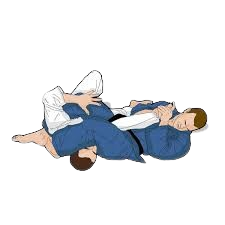
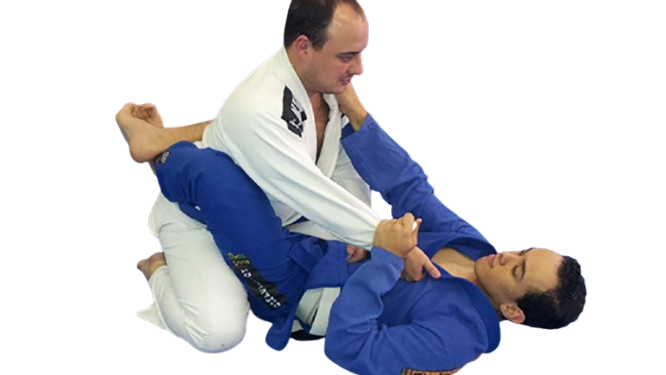
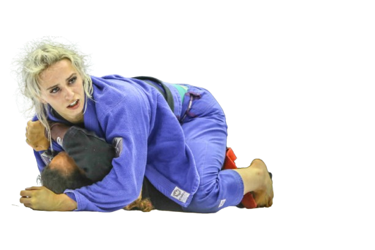

O armlock (ou chave de braço) é uma das finalizações mais comuns e eficazes no jiu-jitsu. Essa técnica consiste em isolar o braço do oponente e aplicar pressão na articulação do cotovelo, forçando-o a desistir. Existem diversas variações, como o arm lock da guarda, arm lock montado e o arm lock invertido, mas todas seguem o mesmo princípio: controlar o braço do adversário e usar o próprio corpo como alavanca para estender o braço além do limite natural. É uma finalização fundamental para praticantes de todos os níveis.
No jiu-jitsu, o termo cadeado é frequentemente usado de maneira informal para se referir ao controle dos punhos ou braços do adversário, especialmente quando se segura os dois braços cruzados ou bloqueados, impedindo que a pessoa se defenda ou se mova com liberdade. Também pode se referir à forma como se "tranca" uma posição, mantendo firmeza e segurança, como no cadeado lateral ou em certos tipos de pegadas e amarrações. O conceito central do cadeado é o controle absoluto, garantindo que o oponente não consiga escapar ou reagir de forma eficiente.
A montada é uma das posições mais dominantes no jiu-jitsu. Nela, o praticante fica por cima do adversário, sentado sobre o abdômen ou o peito dele, com os joelhos no chão e as pernas controlando as laterais do corpo do oponente. Essa posição oferece grande vantagem, pois permite ao atleta de cima aplicar diversos ataques, como estrangulamentos e chaves de braço, além de dificultar bastante a movimentação e defesa de quem está por baixo. A montada bem executada exige equilíbrio, controle de peso e boa base para manter o domínio e buscar a finalização.
